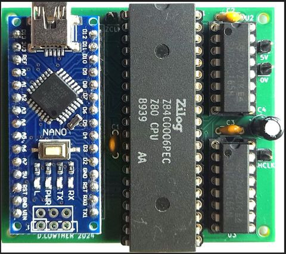
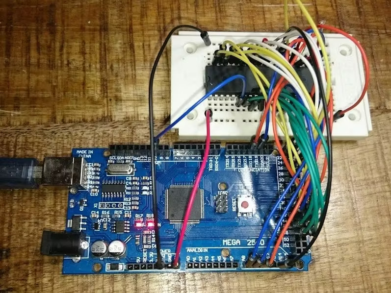
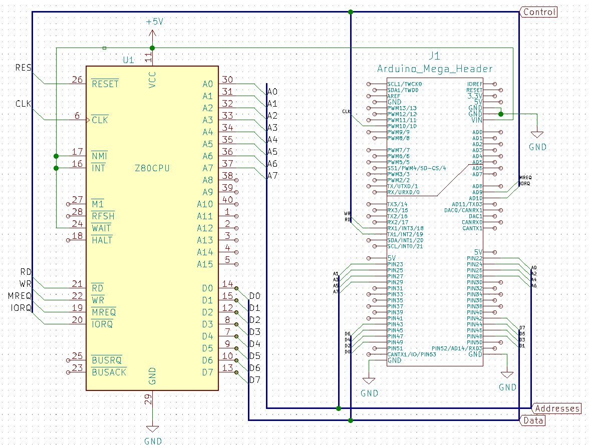
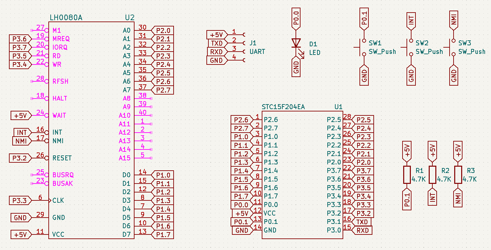
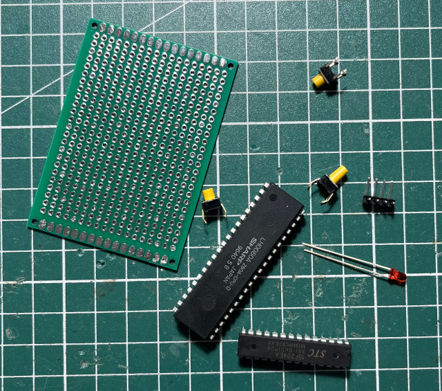
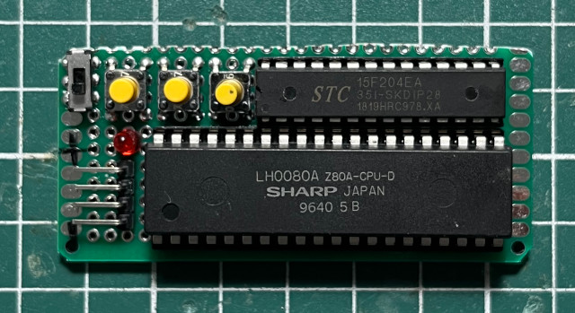
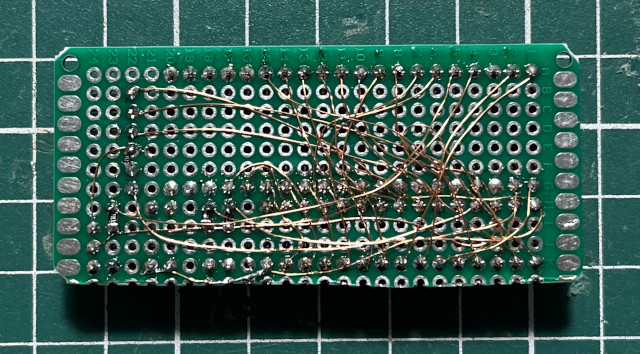
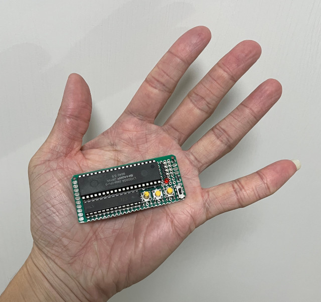
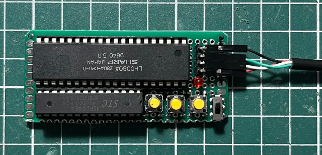

參考資訊：
https://github.com/dev26th/stc_diyclock_gps
https://www.stcmicro.com/datasheet/STC15F204EA-cn.pdf
https://forum.arduino.cc/t/nano-z80-teaching-aid/1290901
https://www.hackster.io/michalin70/retro-computing-with-arduino-mega-and-a-z80-processor-86c79c
https://www.jameco.com/Jameco/Products/ProdDS/35561.pdf?srsltid=AfmBOoprG2KOI0KvClFjnKsE_nvmg3FrZy3G3mMCbNyhGYsHmX0QU6GL
在Arduino討論區看到的PCB，相當適合拿來研究Z80，可惜沒有找到購買的地方









$ sudo stcgal -p /dev/ttyUSB0 -l 9600 -b 9600 -t 11059 main.hex
Waiting for MCU, please cycle power: done
Protocol detected: stc15a
Target model:
Name: STC15F204EA
Magic: F394
Code flash: 4.0 KB
EEPROM flash: 1.0 KB
Target frequency: 10.993 MHz
Target BSL version: 6.7R
Target options:
reset_pin_enabled=False
watchdog_por_enabled=False
watchdog_stop_idle=True
watchdog_prescale=256
low_voltage_reset=True
low_voltage_threshold=4
eeprom_lvd_inhibit=True
eeprom_erase_enabled=False
bsl_pindetect_enabled=False
Loading flash: 284 bytes (Intel HEX)
Trimming frequency: 11.059 MHz
Switching to 9600 baud: done
Erasing 2 blocks: done
Writing flash: 576 Bytes [00:00, 755.78 Bytes/s]
Finishing write: done
Setting options: done
Target UID: F39444AF01C2FD
Disconnected!